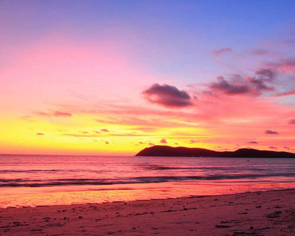
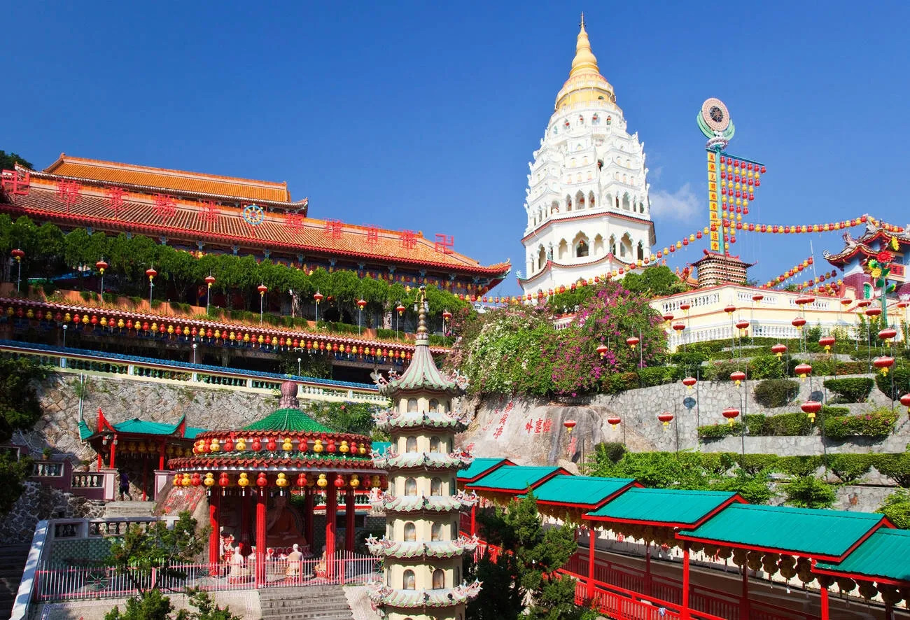
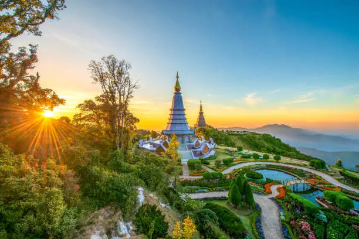

Find your new destination, experience malasian cultures, and create unforgettable memories.
Cenang Beach, on Langkawi Island, Malaysia, is a vibrant and popular destination known for its soft white sand, clear waters, and lively atmosphere. It's a hub for both relaxation and adventure, offering a range of activities like swimming, sunbathing, and exciting water sports such as jet-skiing and parasailing. The beach is lined with coconut trees, beach bars, and restaurants, and is also conveniently located near duty-free shops and other attractions. During the day, it's a great spot for swimming and watersports, while at night, it transforms into a lively social scene with beach bars and live music.
Pantai Tengah Beach in Langkawi, Malaysia, is a beautiful stretch of sand known for its calm and clear waters, ideal for swimming and water sports. It's a more relaxed alternative to the busier Pantai Cenang, offering a tranquil and romantic atmosphere with opportunities for sunbathing, enjoying sunsets, and exploring nearby restaurants and shops.
It is a hill that has series of caves and cave temples. It has an enormous cave temple which has immense religious significance. It actually is a great place for those who have a fondness for caves and temples and geography and yes, little bits of history. It is full of monkeys and the best part is its location and must climb 330 stairs to get to the top of it. It is a Hindu temple but visited by most of the tourists.
The Kek Lok Si Temple is a Buddhist temple in George Town in the Malaysian state of Penang. Located at Ayer Itam, it is the largest Buddhist temple in Malaysia and an important pilgrimage centre for Buddhists from Hong Kong, the Philippines, Singapore and other parts of Southeast Asia.
Singapore is a vibrant island city-state in Southeast Asia, known for its thriving economy, diverse culture, and modern infrastructure. It's a global hub for finance, trade, and transportation, with a unique blend of Western and Asian influences.
Thailand, officially the Kingdom of Thailand, is a Southeast Asian nation known for its vibrant culture, stunning beaches, and ancient temples. It's a constitutional monarchy with a rich history, and while it has experienced political instability, it's a major player in the region, particularly within ASEAN. Thailand is also a popular tourist destination, drawing visitors with its delicious cuisine, natural beauty, and welcoming atmosphere.